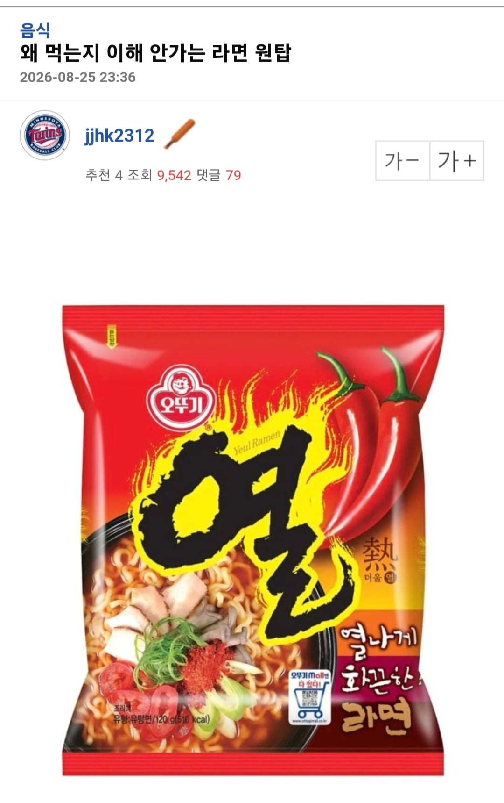
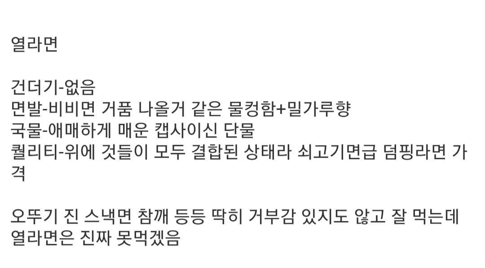

호불호 갈리긴해ㅋㅋ


호불호 갈리긴해ㅋㅋ
기 열라면
아주 예전 신라면 느낌의 스프라 먹는데
늙은 사람은 안좋아함
국물은 칼칼한게 나름 매력이 있는데
면은 진짜 실드못침
순두부 발사대임
다른거랑 섞을때 맛나던데
맵기가 나랑 잘맞아서 가끔먹는데
해장엔 고트지
열라면만 먹음
난 열라면만 먹는데...
매운거 어느정도야 신라면보다 맵나
신라면 맛없어져서 작년부터 이걸로 갈아탓는데?
순두부, 콩나물 발사대
진라면 순한맛이 최고임 요새 존맛이더라
? 씹맛알못새끼네 ㅋㅋ
순두부 등 건더기 넣었을때
일반인 기준 틈새 아래로 매운맛 뽑아주는 베이스로서 좋은거지
응 신라면 상위호환 ㅋㅋ
하 나 붐업 진짜 안주는데 이 어그로는 참을수가 없네
가격대비 훌륭
진라면 보다 괜찮덩데..